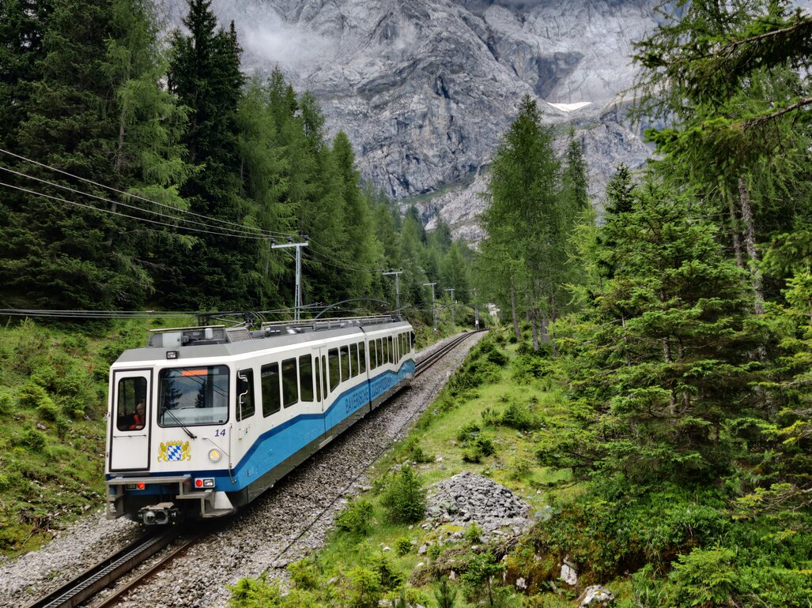
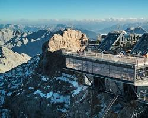
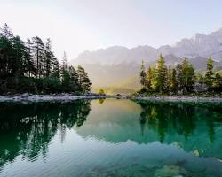
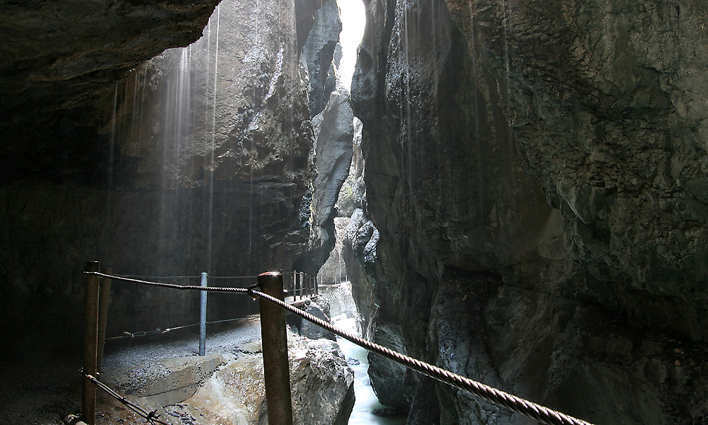
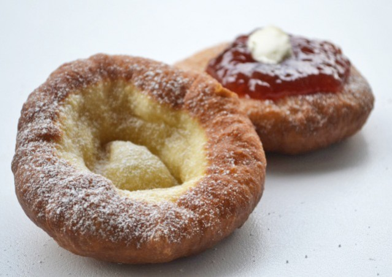
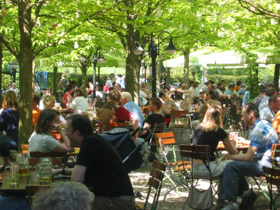

Click in any field below to hear the sentence read aloud.

Click in any field below to reveal a translation.
| Auf geht's zu einem wunderschönen Tagesausflug von München ins malerische Garmisch-Partenkirchen! Diese charmante bayerische Stadt, eingebettet in die atemberaubende Kulisse der Alpen, bietet etwas für jeden Geschmack. Hier ist eine mögliche Route für Ihren Tag: |
Let's go on a wonderful day trip from Munich to picturesque Garmisch-Partenkirchen! This charming Bavarian town, nestled in the breathtaking backdrop of the Alps, offers something for every taste. Here is a possible route for your day:
| 8:00 Uhr: Starten Sie Ihren Tag mit einer Zugfahrt von München Hauptbahnhof nach Garmisch-Partenkirchen. Die Fahrt dauert etwa 1,5 Stunden und bietet Ihnen einen malerischen Blick auf die bayerische Landschaft. |
 |
8:00 am:
Start your day with a train ride from Munich Central Station to Garmisch-Partenkirchen. The journey takes approximately 1.5 hours and offers you scenic views of the Bavarian countryside.
Start your day with a train ride from Munich Central Station to Garmisch-Partenkirchen. The journey takes approximately 1.5 hours and offers you scenic views of the Bavarian countryside.
| 9:30 Uhr: Ankunft in Garmisch-Partenkirchen! Schlendern Sie durch die Fußgängerzone Marienplatz, vorbei an traditionellen bayerischen Häusern und farbenfrohen Geschäften. Genießen Sie ein leckeres Frühstück in einem der gemütlichen Cafés am Marienplatz. |
 |
9:30 am:
Arrival in Garmisch-Partenkirchen! Stroll through the Marienplatz pedestrian zone, past traditional Bavarian houses and colorful shops. Enjoy a delicious breakfast in one of the cozy cafés on Marienplatz.
Arrival in Garmisch-Partenkirchen! Stroll through the Marienplatz pedestrian zone, past traditional Bavarian houses and colorful shops. Enjoy a delicious breakfast in one of the cozy cafés on Marienplatz.
| 11:00 Uhr: Erklimmen Sie die Zugspitze, Deutschlands höchsten Berg! Nehmen Sie die Zahnradbahn auf den Gipfel und genießen Sie den atemberaubenden Panoramablick auf die umliegenden Gipfel und Täler. Bei gutem Wetter können Sie sogar vier Länder sehen: Deutschland, Österreich, Italien und die Schweiz! |
 |
11:00 am:
Climb the Zugspitze, Germany's highest mountain! Take the cog railway to the summit and enjoy the breathtaking panoramic views of the surrounding peaks and valleys. If the weather is good, you can even see four countries: Germany, Austria, Italy and Switzerland!
Climb the Zugspitze, Germany's highest mountain! Take the cog railway to the summit and enjoy the breathtaking panoramic views of the surrounding peaks and valleys. If the weather is good, you can even see four countries: Germany, Austria, Italy and Switzerland!
| 13:00 Uhr: Nach der Ankunft auf der Zugspitze genießen Sie ein herzhaftes bayerisches Mittagessen im Gipfelrestaurant mit herrlicher Aussicht. Probieren Sie unbedingt eine Weißwurst und ein kühles Helles Bier! |
 |
1:00 pm
After arriving at the Zugspitze, enjoy a hearty Bavarian lunch in the summit restaurant with wonderful views. Be sure to try a white sausage and a cold light beer!
After arriving at the Zugspitze, enjoy a hearty Bavarian lunch in the summit restaurant with wonderful views. Be sure to try a white sausage and a cold light beer!
| 14:30 Uhr: Wandern Sie auf einem der vielen malerischen Pfade rund um Garmisch-Partenkirchen. Der Eibsee, ein türkisfarbener See umgeben von Bergen, ist ein besonders beliebtes Ziel. Genießen Sie die frische Bergluft und die atemberaubende Landschaft. |
 |
2:30 pm:
Hike on one of the many scenic trails around Garmisch-Partenkirchen. The Eibsee, a turquoise lake surrounded by mountains, is a particularly popular destination. Enjoy the fresh mountain air and the breathtaking landscape.
Hike on one of the many scenic trails around Garmisch-Partenkirchen. The Eibsee, a turquoise lake surrounded by mountains, is a particularly popular destination. Enjoy the fresh mountain air and the breathtaking landscape.
| 16:30 Uhr: Besuchen Sie die Partnachklamm, eine beeindruckende Schlucht, die vom Fluss Partnach gebildet wurde. Spazieren Sie auf dem Holzsteig durch die Klamm und bewundern Sie die Wasserfälle und Felsformationen. |
 |
4:30 p.m.:
Visit the Partnachklamm, an impressive gorge formed by the Partnach River. Walk along the wooden path through the gorge and admire the waterfalls and rock formations.
Visit the Partnachklamm, an impressive gorge formed by the Partnach River. Walk along the wooden path through the gorge and admire the waterfalls and rock formations.
| 18:00 Uhr: Kehren Sie zurück nach Garmisch-Partenkirchen und genießen Sie ein entspanntes Abendessen in einem traditionellen bayerischen Gasthaus. Probieren Sie lokale Spezialitäten wie Kässpätzle, Schweinebraten und Kiachl (bayerische Donuts). |
 |
Return to Garmisch-Partenkirchen and enjoy a relaxed dinner in a traditional Bavarian inn. Try local specialties such as Kässpätzle, roast pork and Kiachl (Bavarian donuts).
| 20:00 Uhr: Nehmen Sie den Zug zurück nach München und lassen Sie den Tag in einem gemütlichen bayerischen Biergarten ausklingen. |
 |
Take the train back to Munich and end the day in a cozy Bavarian beer garden.
Tipps:
Viel Spaß bei Ihrem Tagesausflug nach Garmisch-Partenkirchen! |
Tips:
- Book your Zugspitze tickets in advance, especially during peak season.
- Wear comfortable shoes, as you will be walking a lot.
- Pack warm clothing, even though it can be cold at the Zugspitze in summer.
- Take your camera with you to photograph the breathtaking scenery.
Have fun on your day trip to Garmisch-Partenkirchen!